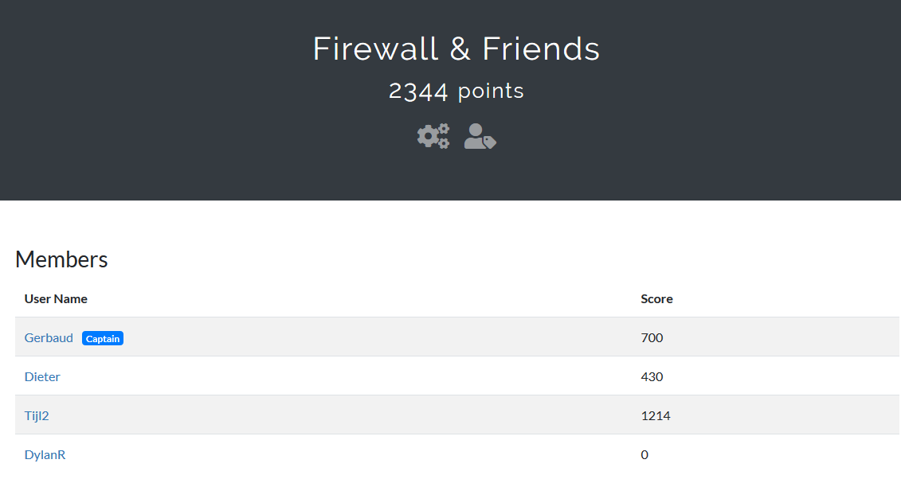

Information
- When? Sunday, 6 October 2019
- Where? Ghent
- Duration? 9:00 AM - 5:30 PM
- What? Capture The Flag in which we had to use our (general) (IT) knowledge to find the flags.
The day started with us arriving at the Ghent train station after which we took our tram to arrive about
30 minutes early.
Once we checked ourselves in, we got the explanation about how the CTF worked exactly, which was very
useful for me as this was kind of my first CTF yet.
The challenges were distributed over a wide range of topics, of which even lockpicking challenges, which
was very fun!
As I am an SSE student, there were quite some challenges I had no idea of how to approach them.
I did try to do some of them, but I ended up doing mostly the coding related and some of the more simple
challenges.
I also tried lockpicking, but I couldn't really crack these challenges so I ended up trying to help the
rest of my team with some challenges.
In the end, I had a blast during this CTF and it was very fun to learn a bit more about Kali & RFID
(thanks to my team members).
It was my first time trying lockpicking and it was a fun experience aswell, just sad that I wasn't quite
good at it.
On the right you can see our team scores. Dylan his score is on 0 because Tijl entered in all the (lockpicking) flags he had found. We ended up solving quite some challenges in the end, but I do think we could have done more if we didn't waste as much time on some harder challenges.
